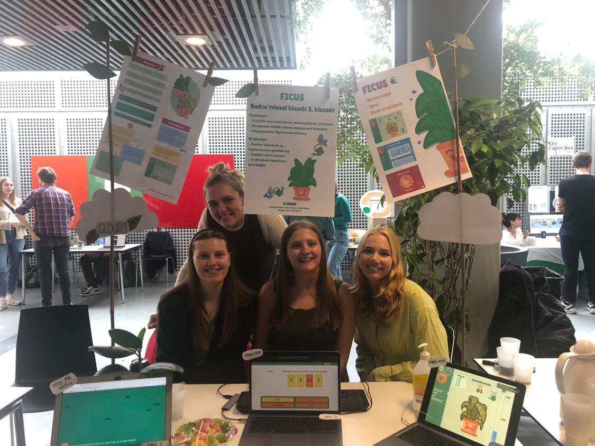
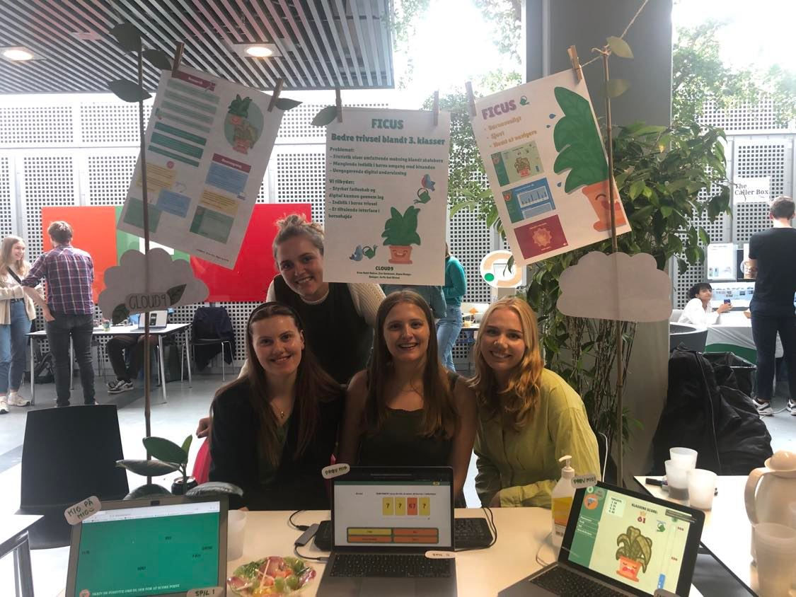
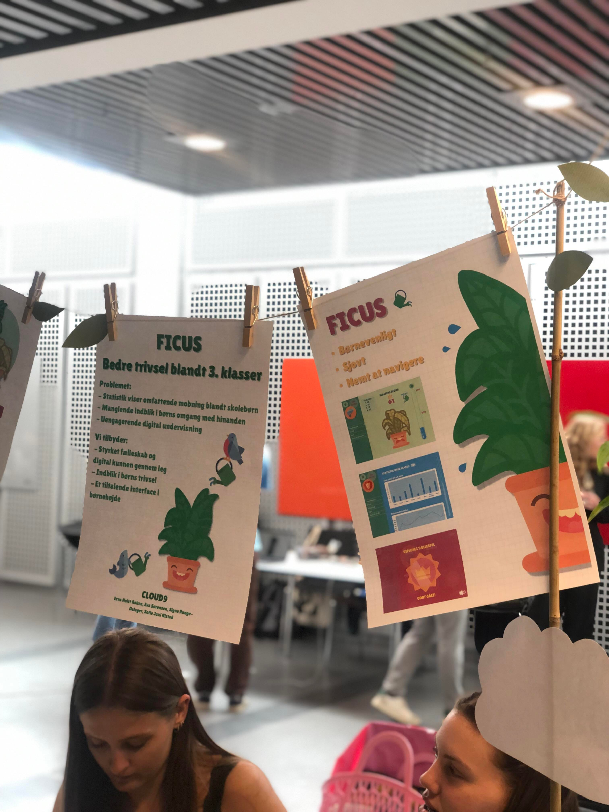
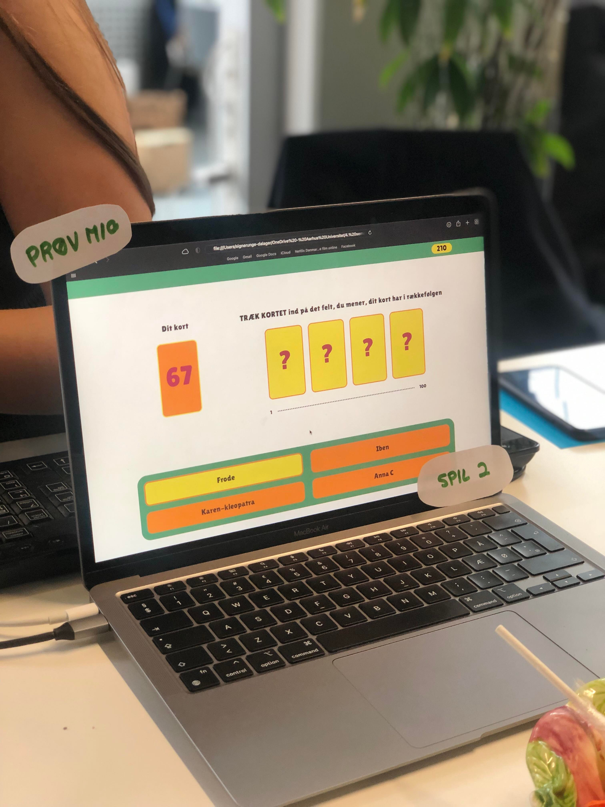
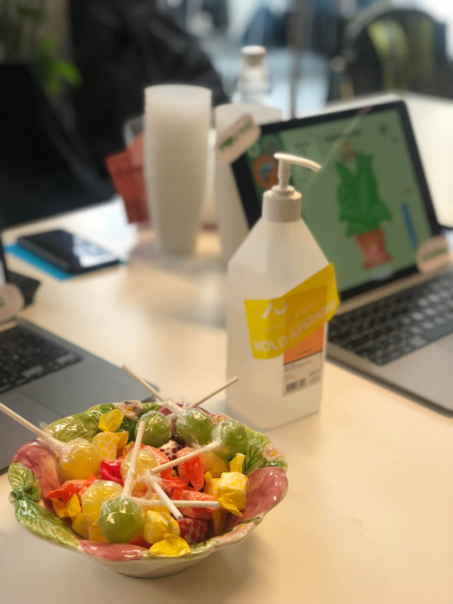
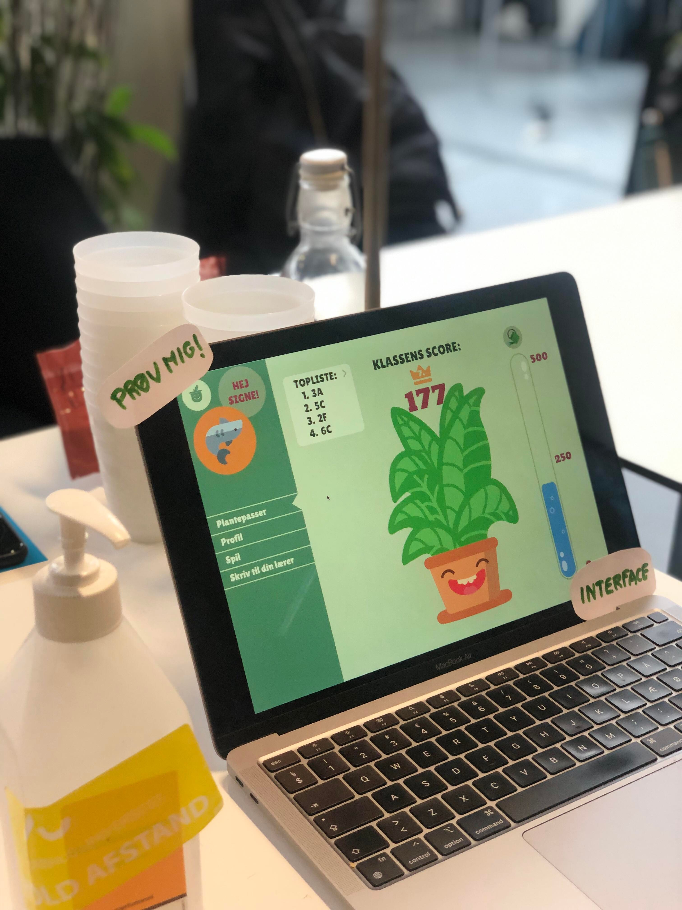
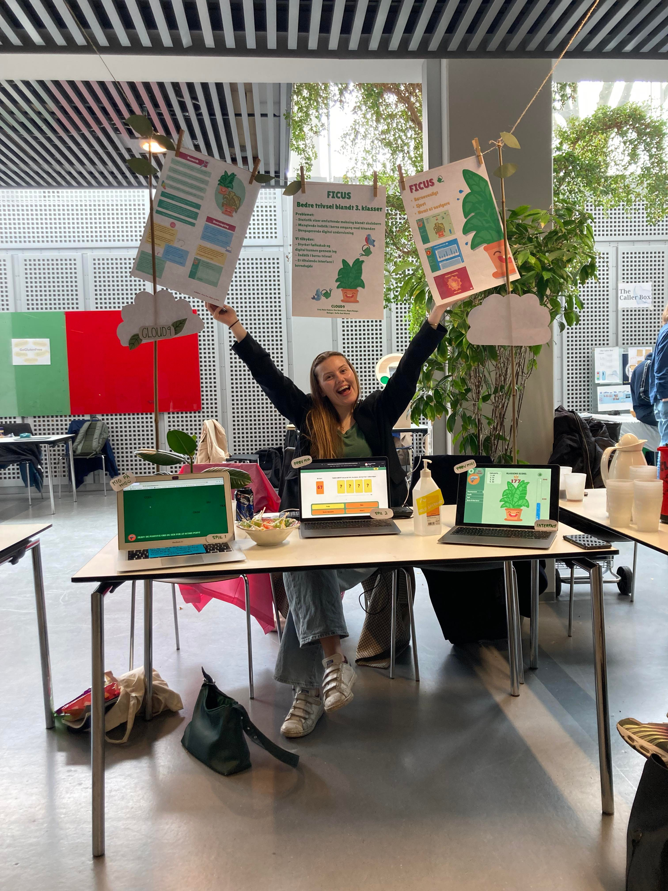
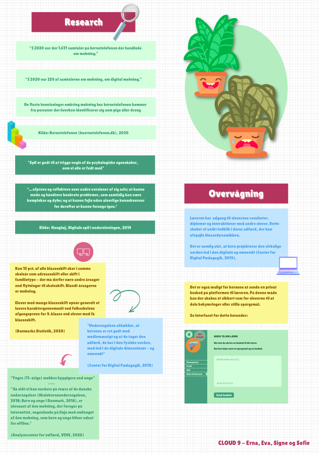

Design Expo
For the Design Expo on the 6. May, we're exhibiting our final Figma prototype and the two minigames we've coded. We have also prepared some posters with different informations about our process.







The Design Expo
 At the expo we're doing a 3 minute pitch (Signe from our group is presenting) to shortly present our final project and prototype. We then also have a stand where visitors can ask us questions, try the prototype out and read our different posters with selected information.It will be possible to try both games (as much as it is possible, as it's just prototypes). You can also read all about the final concept here.
The Design Expo presentation will include important points as:
- Statistics show bullying amongst children i schools in Denmark - one in every 30rd 11 year-old exprience bullying at least once a month. This is more than 3000 children at the age of 11 who experience bullying in schools in Denmark
- Difficulty to have a glimpse into the social dynamics between children
- A platform that prevents bullying
- The advantages of learning through collaboration, digital games and -knowledge